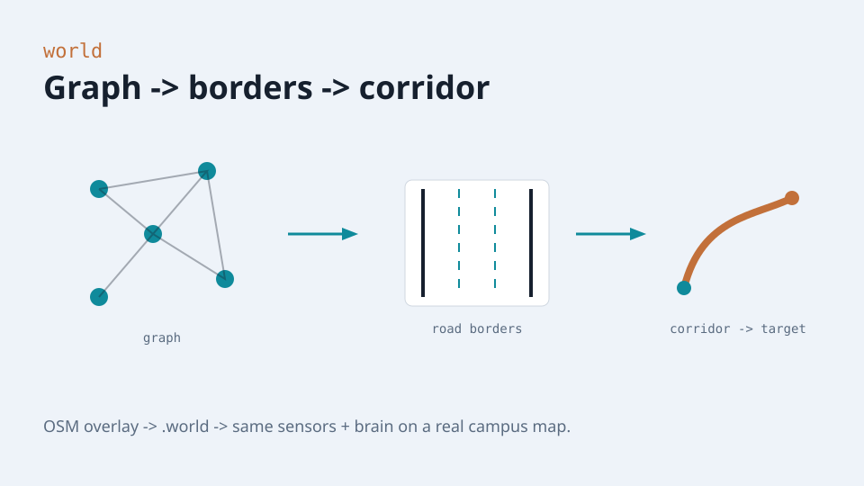
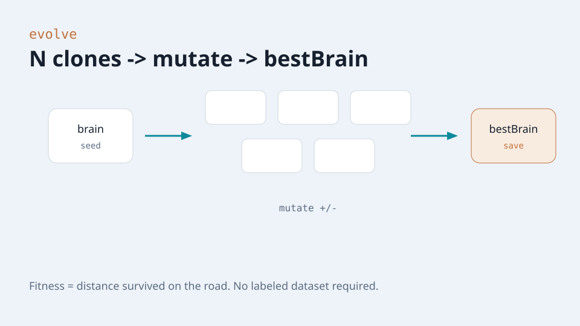

Sensors → brain → map
Beyond toy classification: ray sensors, a feed-forward net, mutated clones, and a virtual world — then the same loop on a real map.
Line · plane · hyperplane
Line
Separates two sides on a plane — the simplest decision boundary.
Plane
Cuts space; weighted sum = threshold is the same idea.
Hyperplane
Each neuron draws one; stacked layers compose richer regions.
Driving controls are just boundaries over sensor space.
Levels: input · hidden · output
Sensors + speed
Ray offsets ∈ [0,1] plus normalized speed.
Weighted sums
Hard threshold vs bias (demo) — or soft activations later.
Controls
forward · left · right · reverse (on/off).
Cast rays · read the world

Virtual world · corridor

Mutate N · keep bestBrain

Two lives of a brain
Evolve
N cars race; mutate losers’ copies; save the survivor’s weights.
Drive
Reload bestBrain; sensors → feedForward → controls every frame.
Same split as notes/06-train-infer.md — evolution is just another trainer.
Road demo → real campus
Training road
Lanes + dummy traffic + mutate/save — runs in the browser now.
Virtual world
Map editor, OSM overlay, office .world — same brain, harder geometry.
Open app · watch clones
save the best brain.
Yellow rays = sensors. Right panel = live network. Disk = persist bestBrain for the next reload.
Open working app →